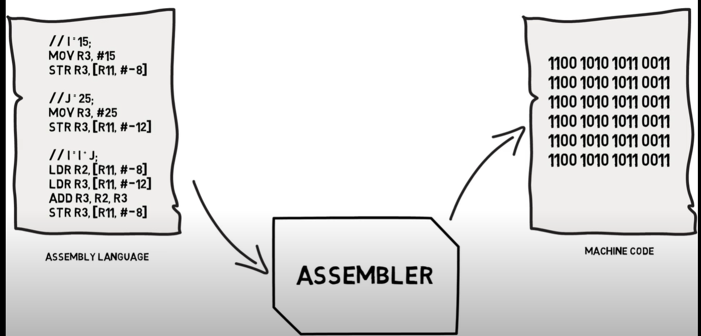
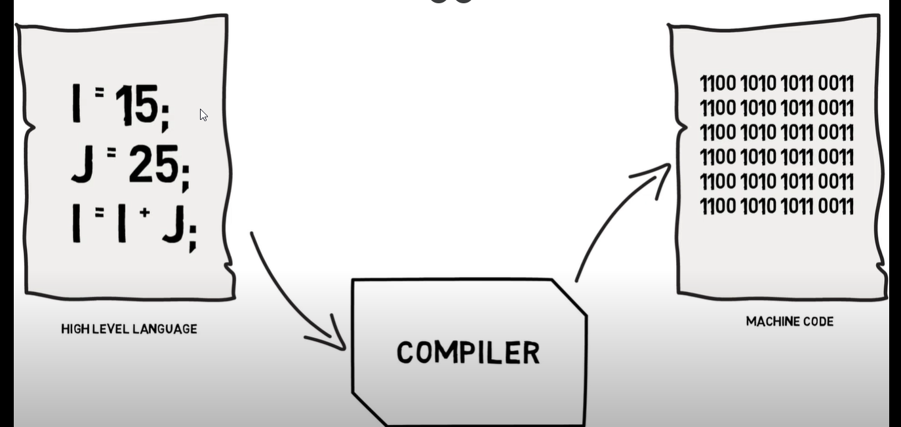

Zlaganje, prevajanje in tolmačenje programske kode
Da lahko program, zapisan v izvorni kodi, zaženemo in preizkusimo, potrebujemo ustrezno programsko orodje. Procesor neposredno izvaja samo navodila v strojnem jeziku, ki so zapisana v binarni obliki, torej z ničlami in enicami. Program lahko pripravimo za izvajanje oziroma izvajamo na različne načine: z zbirnikom, prevajalnikom ali tolmačem.
Zbirnik, prevajalnik in tolmač so programi, vendar ne opravljajo povsem enake naloge:
Zbirnik (ang. assembler) prevede program, napisan v zbirnem jeziku, v strojno kodo.
Prevajalnik (ang. compiler) pred izvajanjem prevede izvorno kodo v drugo obliko, na primer v strojno ali vmesno kodo. Prevedeno kodo nato izvedemo z ustreznim računalnikom oziroma izvajalnim okoljem.
Tolmač (ang. interpreter) med izvajanjem sproti obdeluje in izvaja navodila programa. Pri tem ne izdela nujno ločenega programa v strojni kodi. Tolmač je tudi sam program, zato procesor pri njegovem delovanju izvaja strojna navodila tolmača.
Pri nekaterih jezikih običajno uporabljamo prevajanje, pri drugih tolmačenje, obstaja pa tudi kombiniran oziroma hibridni pristop. Način izvajanja je odvisen tudi od uporabljenih orodij in izvajalnega okolja, ne samo od programskega jezika.
Razliko med prevajanjem in tolmačenjem si lahko ponazorimo s primerom iz vsakdanjega življenja.
Prevajalec prevede knjigo, še preden jo bralec začne brati. Prevod je shranjen in ga lahko pozneje bere veliko ljudi, ne da bi prevajalec moral knjigo vsakič znova prevajati. Podobno prevajalnik pripravi prevedeno kodo, ki jo lahko nato večkrat izvedemo brez ponovnega prevajanja, dokler je ne spremenimo.
Tolmač prevaja govor sproti, medtem ko govornik govori. Poslušalci lahko prevodu sledijo že med dogodkom, saj tolmač ne čaka na konec celotnega govora. Pri televizijskih poročilih lahko na primer vidimo osebo, ki govor tolmači v znakovni jezik za gluhe in naglušne. Podobno računalniški tolmač sproti obdeluje in izvaja navodila programa.
Ta primerjava je poenostavljena: tolmačenje ne pomeni nujno izvajanja izvorne kode vrstico za vrstico.
Primer kombiniranega pristopa je Java. Prevajalnik javac izvorno kodo prevede v vmesno kodo (ang. bytecode). To izvaja navidezni stroj Java (JVM), ki jo lahko tolmači ali med izvajanjem s prevajalnikom JIT prevede v strojno kodo.
Zbirni jezik in zbirnik (assembler)
Zbirni jezik (ang. assembly language) je nizkonivojski programski jezik, tesno povezan s strojnim jezikom določene procesorske arhitekture. Strojne ukaze zapisujemo s simboličnimi imeni, kot so ADD, MOV in SUB, uporabljamo pa lahko tudi oznake in simbolična imena za naslove. Program, imenovan zbirnik (ang. assembler), prevede program iz zbirnega jezika v strojno kodo.
Ukaz ADD r0, r1, r3 lahko na primer pomeni, da procesor sešteje vrednosti v registrih r1 in r3 ter rezultat shrani v register r0. Zbirnik ime ukaza in oznake registrov pretvori v ustrezen binarni zapis. Natančen zapis in pomen ukaza sta odvisna od izbrane procesorske arhitekture.

Prevajanje zbirnega jezika v strojno kodo. Zbirnik (ang. assembler) pretvori simbolično zapisane ukaze in njihove operande v ustrezne strojne ukaze za izbrano procesorsko arhitekturo.
Binarni zapis na sliki je le ponazoritev, saj se ista bitna kombinacija ponavlja in ne predstavlja dejanskega prevoda različnih ukazov na levi.
Za radovedne
The term “assemble” in assembly language refers to the process of converting assembly code into machine code. This is done by a program called an assembler. Here’s a bit more detail:
Assembly Language: This is a low-level programming language that uses mnemonic codes to represent machine-level instructions. It’s closer to the hardware and provides direct control over the computer’s operations1.
Assembler: This is a software tool that translates the assembly language code into machine code, which is the binary code that the computer’s processor can execute2. The process of translation is called “assembling,” hence the term.
So, “assemble” in this context means to take the human-readable assembly language and convert it into the machine-readable binary code.
The main difference between assembling and compiling lies in the type of code they process and the output they generate:
Assembling
Input: Assembly language code, which is a low-level language using mnemonic codes to represent machine-level instructions.
Output: Machine code, which is binary code that the computer’s processor can execute directly.
Process: An assembler translates the assembly language code into machine code. This process is relatively straightforward because assembly language is already quite close to machine code1.
Compiling
Input: High-level programming language code, such as C, C++, Java, or Python.
Output: Machine code or sometimes intermediate code (like bytecode in Java) that can be further processed or executed.
Process: A compiler translates the high-level code into machine code. This involves multiple stages, including lexical analysis, syntax analysis, semantic analysis, optimization, and code generation. Compilers also perform error checking and optimization to improve the efficiency of the resulting machine code.
Key Differences
Level of Abstraction: Assemblers work with low-level assembly language, while compilers handle high-level programming languages.
Complexity: Compilers are generally more complex than assemblers because they need to understand and optimize high-level code.
Error Handling: Compilers perform extensive error checking and report errors in the source code, whereas assemblers primarily check for syntax errors in the assembly code.
Vir:
http://sasa.musiclab.si/eri1/RACUNALNISTVO_OLD/RAC_SLOJI/prog_stavki_prevajanje_tolmacenje.html
https://codedamn.com/codedamn-is-sunsetting
https://www.geeksforgeeks.org/compiler-design/difference-between-compiler-and-assembler/
https://techdifferences.com/difference-between-compiler-and-assembler.html
Prevajalnik
Prevajalnik (ang. compiler) je program, ki izvorno kodo, napisano v določenem programskem jeziku, prevede v drugo obliko, na primer v strojno ali vmesno kodo. Med prevajanjem preverja pravilnost zapisa in odkrije nekatere sintaktične napake (kršitve pravil zapisa jezika, manjkajoča podpičja, ...) . Uspešno prevajanje pa še ne pomeni, da program deluje pravilno, saj lahko vsebuje logične ali semantične napake.
Prevajanje poteka pred izvajanjem prevedene kode. Ko je program preveden in pripravljen za zagon, ga lahko večkrat izvedemo brez ponovnega prevajanja. Če izvorno kodo spremenimo, moramo spremenjene dele znova prevesti.
Pri jeziku C lahko s prevajalnikom in povezovalnikom izdelamo izvršljivo datoteko s strojno kodo. Pri Javi prevajalnik javac izvorno kodo prevede v vmesno kodo (bytecode), ki jo nato izvaja navidezni stroj Java (JVM).
Za radovedne
Process: A compiler translates the entire high-level program into machine code before execution. This machine code is then saved as an executable file.
Postopek: Prevajalnik prevede vso programsko kodo, napisano v višjem programskem jeziku, preden jo lahko zaženemo. Dobljen rezultat je shranjen v datoteki in se imenuje strojna koda.
Execution: The compiled machine code is executed directly by the computer’s CPU.
Zagon: Prevedena strojna koda se izvede direktno v procesurju (CPE).
Performance: Compiled programs generally run faster because the translation is done ahead of time.
Performance (zmogljivost): Prevedeni programi so v primerjavi s tolmačenimi ali hibridnimi hitrejši, ker se v celoti prevedejo pred izvajanjem.
Error Detection: Compilation catches syntax and some semantic errors before the program runs, making debugging easier.
Detekcija napak: Prevajalnik ujame sintaktične napake (in tudi nekatere semantične) pred izvajanjem programa.
Examples: C, C++, Rust, and Go are examples of compiled languages
Primeri: C, C++, Rust, Go

vir:
https://www.freecodecamp.org/news/compiled-versus-interpreted-languages/
Tolmač
Tolmač (ang. interpreter) je program, ki med izvajanjem obdeluje in izvaja navodila programa. Za izvajanje zato potrebujemo ustrezen tolmač oziroma izvajalno okolje. Predhodna izdelava samostojne izvršljive datoteke s strojno kodo ni potrebna.
Tolmačenje pogosto opisujemo kot sprotno izvajanje ukazov, vendar to ne pomeni nujno izvajanja izvorne kode vrstico za vrstico. Tolmač lahko izvorno kodo najprej pretvori v notranjo predstavitev ali vmesno kodo in nato izvaja to obliko.
Primer je Python. Njegova najpogostejša izvedba, CPython, izvorno kodo najprej prevede v vmesno kodo, ki jo nato izvaja tolmač. To kaže, da se lahko prevajanje in tolmačenje pri izvajanju istega programa tudi kombinirata.
Za radovedne
Process: An interpreter translates high-level code into machine code line-by-line, executing each line immediately.
Postopek: Prevede visoki programski jezik v strojni vrstico po vrstico. Vsako vrstico izvede takoj (sproti).
Execution: The source code is read and executed by the interpreter at runtime.
Izvajanje: Izvorna koda se prebere in izvede takoj.
Performance: Interpreted programs tend to run slower because the translation happens during execution.
Zmogljivost: Tolmačeni programi se praviloma izvajajo počasneje, ker se prevajajo med izvajanjem.
Error Detection: Errors are detected at runtime, which can make debugging more challenging but allows for more flexibility.
Detekcija napak: Napake se najdejo med izvajanjem.
Examples: Python, JavaScript, Ruby, and PHP are examples of interpreted languages.
Primeri: Python, JavaScript, Ruby, PHP, …
Hibridni pristop
Hibridni pristop združuje prevajanje in tolmačenje. Izvorno kodo najprej prevedemo v vmesno kodo, ki ni namenjena neposrednemu izvajanju na procesorju. Izvaja jo ustrezno izvajalno okolje oziroma navidezni stroj, ki jo lahko tolmači ali med izvajanjem prevede v strojno kodo.
Primer je Java. Prevajalnik javac izvorno kodo iz datoteke .java prevede v vmesno kodo (ang. bytecode), shranjeno v datotekah .class. To kodo izvaja navidezni stroj Java (JVM). JVM jo lahko tolmači, pogosto izvajane dele pa s prevajalnikom JIT (ang. just-in-time compiler) med izvajanjem prevede v strojno kodo.
Tak pristop omogoča prenosljivost in učinkovito izvajanje. Isto vmesno kodo lahko izvajamo na različnih platformah, če imajo ustrezen JVM, prevajanje JIT pa lahko pospeši izvajanje programa.

Razlaga razlik med prevajanjem in izvajanjem za C++ (in podobni), C#, Java in Python
C++ – klasičen prevedeni jezik (compiled language)
Postopek prevajanja
Kodo (.cpp) prevajalnik prevede direktno v strojno kodo (EXE, ELF).
Rezultat je samostojen program, ki ne potrebuje tolmača.
Postopek izvajanja
Operacijski sistem program naloži in izvaja neposredno na procesorju.
Zelo hitro izvajanje, brez vmesne virtualne naprave.
Odlikuje ga
Največja hitrost, nizek dostop do strojne opreme.
C# – preveden + delno tolmačen jezik (JIT)
C# deluje preko .NET CLR (Common Language Runtime), podobno kot Java preko JVM.
Postopek prevajanja
Kodo (.cs) prevede v vmesno kodo (IL – Intermediate Language).
Program ne teče neposredno, ampak potrebuje .NET okolje.
Postopek izvajanja
CLR vmesno kodo prevede sproti (JIT – Just-In-Time) v strojno kodo, med izvajanjem.
Kombinacija hitrosti in fleksibilnosti.
Odlikuje ga
Podobno kot Java – varnost, stabilnost, JIT optimizacija.
Java – preveden + tolmačen jezik (JVM)
Postopek prevajanja
Prevajalnik javac pretvori .java v bytecode (.class).
Bytecode ni strojna koda, teče pa na JVM.
Postopek izvajanja
JVM bytecode tolmači ali JIT-prevaja v strojno kodo.
Deluje na vseh OS, kjer je JVM → Write once, run anywhere.
Odlikuje ga
Prenosljivost + varnost + stabilnost.
Python – tolmačen jezik
Python ni klasično preveden, ampak tolmačen.
Postopek prevajanja
Ko zaženeš .py datoteko, Python najprej ustvari bytecode (.pyc) za svoj tolmač.
To ni pravi “compile”, ampak notranji korak.
Postopek izvajanja
Python interpreter (CPython) bytecode tolmači vrstico po vrstico.
To pomeni počasnejše izvajanje.
Odlikuje ga
Izredno enostaven, primeren za skripte in hitro razvojno delo.
Primerjava
| Jezik | Kako se prevede? | Kako se izvaja? | Hitrost | Potreben runtime? |
|---|---|---|---|---|
| C++ | neposredno v strojno kodo | OS + CPU | ⭐⭐⭐⭐⭐ najhitrejši | ne |
| C# | v vmesno kodo (IL) | CLR JIT | ⭐⭐⭐⭐ | da (CLR/.NET) |
| Java | v bytecode | JVM + JIT | ⭐⭐⭐⭐ | da (JVM/JRE) |
| Python | v bytecode (.pyc) | tolmač | ⭐⭐ | da (Python interpreter) |
Jeziki podobni C++ (prevedeni, hitri, nizko-nivojski)
Najbolj podobni C++ po prevajanju in hitrem izvajanju:
C – osnova C++ (še bolj nizkonivojski)
Rust – sodobna alternativa C++ (varen pomnilnik, hitrost)
Go (Golang) – zelo hiter, statično preveden
D-lang – modernejša različica C++
Ada – robusten, uporabljen v letalstvu/vojaški industriji
Zig – nov jezik za sistemsko programiranje
Ključna lastnost vseh:
Prevajajo se direktno v strojno kodo, brez virtualnega stroja → zato so zelo hitri.
Povzetek, primeren za dijake
C++ → prevede se v strojno kodo → najhitrejši, ne potrebuje virtualnega stroja.
C# → prevede se v vmesno kodo → izvaja se v .NET okolju (JIT).
Java → prevede se v bytecode → izvaja se v JVM, zato deluje na vseh sistemih.
Python → tolmačen jezik → izvaja se vrstico po vrstico, zato počasnejši.
Vir:
Interpreted vs Compiled Programming Languages: What's the Difference? (freecodecamp.org)
Viri:
https://www.youtube.com/watch?v=5LeZflr8Zfs&t=62s
https://www.youtube.com/watch?v=4gwYkEK0gOk
https://www.youtube.com/watch?v=wA2oMRmbrfo
https://lusy.fri.uni-lj.si/ucbenik/book/1303/index4.html
https://www.geeksforgeeks.org/generation-programming-languages/
https://medium.com/@ajuatahcodingarena/generations-of-programming-languages-bed30d19ea8e
https://www.geeksforgeeks.org/generation-programming-languages/